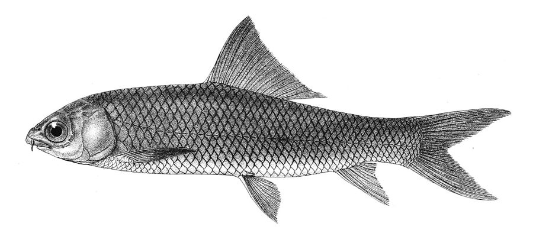

मृगलMrigal
Cirrhinus mrigala · Cyprinidae · FSH-0006

- Scientific name
- Cirrhinus mrigala (Hamilton, 1822)
- Family
- Cyprinidae
- Hindi
- मृगल
- Status here
- native
- IUCN
- LC
When to look कब देखें
Present all year.
मृगल / Mrigal
Cirrhinus mrigala (Hamilton, 1822) — Cyprinidae
मृगल — हमारे नदियों और तालाबों के तल (bottom) में रहने वाली एक महत्वपूर्ण और अत्यंत लोकप्रिय देशी कार्प मछली है जो 'भारतीय प्रमुख कार्प' (Indian Major Carps) तिकड़ी का हिस्सा है। इसका मुँह नीचे की ओर झुका हुआ और नुकीला (sub-inferior mouth) होता है, जो इसे पानी की तलहटी में जमा कार्बनिक मलबे और सड़े-गले पौधों को खाने में मदद करता है। तालाबों में मछली पालन के दौरान इसे रोहू और कतला के साथ पाला जाता है, क्योंकि ये तीनों पानी की अलग-अलग परतों में भोजन करती हैं और भोजन के लिए आपस में प्रतिस्पर्धा नहीं करतीं। यह नदीय पारिस्थितिकी तंत्र में तलहटी की सफाई करने वाली एक महत्वपूर्ण प्रजाति है।
Quick Identification त्वरित पहचान
| Feature | Description |
|---|---|
| Size & Shape | Medium to large fish (typically 30–60 cm long, weight 1–5 kg); body is linear and streamlined |
| Colour | Silvery-grey body with a coppery-gold sheen on the back; belly is silvery-white |
| Mouth | Sub-inferior, downward-pointing mouth with a straight, sharp lower lip, adapted for bottom scraping |
| Fins | Pectoral, pelvic, and anal fins are orange-grey or yellowish; dorsal fin is greyish |
| Scales | Large, cycloid scales with a bright golden-copper edge, giving the back a textured look |
Field tip: Look for a silvery, slender carp with a downward-pointing, pointed mouth and orange-yellow pelvic and anal fins. Unlike Rohu, it has a straight, sharp lower lip without any transverse wrinkles.
Morphology आकारिकी
Biometrics (typical measurements in the Gangetic plain):
| Measurement | Range |
|---|---|
| Standard length (SL) | 300–600 mm |
| Total length (TL) | 350–700 mm |
| Weight | 1000–5000 g |
Body: Elongated, streamlined, laterally compressed. The dorsal profile is moderately arched, while the ventral profile is nearly straight. Back is coppery-grey, sides are silvery, and the abdomen is white.
Head & Mouth: Head is moderate-sized with a pointed snout. The mouth is sub-inferior and wide. Lips are thin, with the lower lip being straight and non-papillated (lacking wrinkles). A pair of small, inconspicuous barbels is present at the corners of the mouth.
Fins: The dorsal fin has 15–16 rays and is greyish. Pectoral, pelvic, and anal fins are dusky yellow or orange-tinted. The caudal (tail) fin is deeply forked and grey-orange.
Vocalisations
Fish do not possess vocal organs and cannot produce true vocalisations.
- Sound production: Silent; no vocalisations or sound production.
Behaviour & Ecology व्यवहार और पारिस्थितिकी
As a bottom-feeding detritivore, Cirrhinus mrigala spends its life scavenging on the riverbed or pond floor. It feeds on decaying organic matter, algae, and small benthic invertebrates, helping to keep the water bottom clean and reducing the accumulation of toxic organic silt.
Larval (Naiad) Stage
The larval stage is aquatic and pelagic.
- Larval development: Eggs hatch within 16–20 hours into tiny hatchlings that swim freely near the surface, feeding on microscopic zooplankton (rotifers, water fleas).
- Substrate preference: As they mature into fry and fingerlings (after 4–6 weeks), their mouths move downwards, and they migrate to the bottom layer to feed on benthic detritus.
- Larval duration: The transition from egg to independent juvenile takes approximately 6–8 weeks in the warm monsoon floodplains.
Life Cycle / Phenology जीवन चक्र
- Spawning: June to September, triggered by monsoon floods and rise in river water levels.
- Reproduction: In the wild, they migrate upstream to shallow, flooded grass margins of rivers to spawn.
- Aquaculture: Spawning is induced in controlled hatcheries using hormone injections.
- Growth: Rapid growth, reaching 1–1.5 kg in the first year under polyculture.
- Lifespan: Approximately 8–12 years.
Host Plants or Prey आहार
Primary food items:
- Detritus: Decomposing plant matter and organic mud at the bottom.
- Algae: Benthic diatoms and blue-green algae.
- Invertebrates: Small aquatic worms, chironomid larvae, and freshwater mollusks.
Predators / Natural Enemies शत्रु
- Fishes: Larger predatory catfishes (such as Wallago attu).
- Reptiles: [REP-0008 Indian Softshell Turtle] and large water snakes.
- Birds: Fish eagles, storks, and herons preying on juveniles in shallows.
Agricultural / Human Relevance कृषि प्रासंगिकता
Composite Fish Culture. Mrigal is a corner stone of freshwater aquaculture in eastern Uttar Pradesh. It is cultured in a three-species polyculture system:
- [FSH-0002 Catla] — feeds on zooplankton at the surface.
- [FSH-0001 Rohu] — feeds on algae in the column.
- Mrigal — feeds on detritus at the bottom.
By utilising different layers of the pond, this system avoids food competition and maximises fish yield. Mrigal keeps the pond floor clean, preventing gas build-up from rotting organic waste.
Expected Locally स्थानीय रूप से अपेक्षित
Not a field record. Written from published accounts for eastern Uttar Pradesh. No confirmed local sighting yet — if you have seen it, that is what the atlas needs.
अभी तक स्थानीय पुष्टि नहीं। यह विवरण प्रकाशित स्रोतों से है, किसी अवलोकन से नहीं।
A very common fish in the local fish markets of Basti, Ayodhya, and Gonda. It is widely stocked in almost all village panchayat ponds (talab) under commercial fishery leases. Wild specimens, locally called Mirka or Naini, are caught by local fishermen (Nishads) using cast nets in the Ghaghra and Kuwano rivers during the post-monsoon months.
Distribution वितरण
Global range: Native to the major river systems of the Indian subcontinent, including Pakistan, India, Nepal, Bangladesh, and Myanmar. Introduced for aquaculture across Southeast Asia.
In India: Native to the Indus, Ganges, and Brahmaputra basins; widely introduced to southern Indian peninsular rivers.
In Uttar Pradesh: Present state-wide in all major rivers, canals, and aquaculture zones.
In Basti district / eastern UP: Common in the Ghaghra-Saryu river networks and village ponds.
Research Questions शोध प्रश्न
Anyone can investigate these | कोई भी इन प्रश्नों की जाँच कर सकता है
- How does the growth rate of Mrigal compare to Rohu under the same feeding regime in your local pond? — Record weights of both species at harvest.
- Do wild Mrigal populations in the Saryu river show genetic differences from hatchery-bred stocks? — Survey local fishers and collect fin clips for analysis.
- What is the preference of Mrigal for artificial floating feed vs. natural bottom detritus? / तालाब में कृत्रिम तैरते चारे और प्राकृतिक तली के कीचड़ में से मृगल किसको अधिक पसंद करती है? — Observe feeding behavior in clear research tanks.
- How does the presence of bottom-feeding Mrigal affect the turbidity of pond water? — Measure water clarity in ponds with and without Mrigal stocking.
- At what river depth do wild Mrigal congregate during the dry winter months? / शुष्क सर्दियों के महीनों में जंगली मृगल नदी की किस गहराई पर जमा होती है? — Interview local river fishermen.
Similar Species मिलती-जुलती प्रजातियाँ
| Species | How to tell apart | हिंदी |
|---|---|---|
| [FSH-0001 Rohu] | Silvery-grey with reddish fins; mouth is terminal with thick, transversely wrinkled lips; column feeder | रोहू — लाल पंख, झुर्रीदार होंठ |
| [FSH-0002 Catla] | Much larger head; upward-directed mouth; deep body; surface feeder | कतला — बड़ा सिर, ऊपर मुँह |
| Common Carp (Cyprinus carpio) | Has 2 pairs of prominent barbels; olive-gold body; long dorsal fin; introduced exotic | कॉमन कार्प — चार मूंछें, लम्बा पंख |
Field rule: Streamlined silver body, downward-pointing mouth with thin smooth lips, and yellowish-orange pelvic/anal fins identify the Mrigal.
Taxonomy & Classification वर्गीकरण
Original description. Francis Hamilton described this species as Cyprinus mrigala in 1822 in his work on Gangetic fishes (An Account of the Fishes Found in the River Ganges and its Branches, page 301). Type locality: Gangetic provinces, India. The genus name Cirrhinus refers to the curl-like barbels, and mrigala is derived from the Sanskrit mrigal, meaning deer-like or swift.
Subspecies. Monotypic.
Family and order placement. Placed in the order Cypriniformes, family Cyprinidae.
Phylogenetic notes. Cirrhinus mrigala is closely related to other South Asian cyprinids like Cirrhinus reba (Reba carp).
IUCN status rationale. Listed as Least Concern (LC). Widespread and highly abundant in wild river systems and farmed ponds, though riverine populations face threat from sand mining.
Photo Gallery फोटो गैलरी
References संदर्भ
- Hamilton, F. (1822). An Account of the Fishes Found in the River Ganges and its Branches. Archibald Constable and Company, Edinburgh, p. 301. [original description]
- Jhingran, V.G. (1991). Fish and Fisheries of India. 3rd ed. Hindustan Publishing Corporation, New Delhi.
- Talwar, P.K. & Jhingran, A.G. (1991). Inland Fishes of India and Adjacent Countries. Vol. 1. Oxford & IBH Publishing, New Delhi.
- Yang, L. et al. (2015). Molecular phylogeny of Cyprinidae. Molecular Phylogenetics and Evolution, 92, 10–25.
- IUCN SSC Freshwater Fish Specialist Group (2024). Cirrhinus mrigala. IUCN Red List of Threatened Species. Ver. 2024.
- GBIF Occurrence Data — Cirrhinus mrigala, Uttar Pradesh (2010–2025).
Source file: species/fauna/fish/mrigal.md